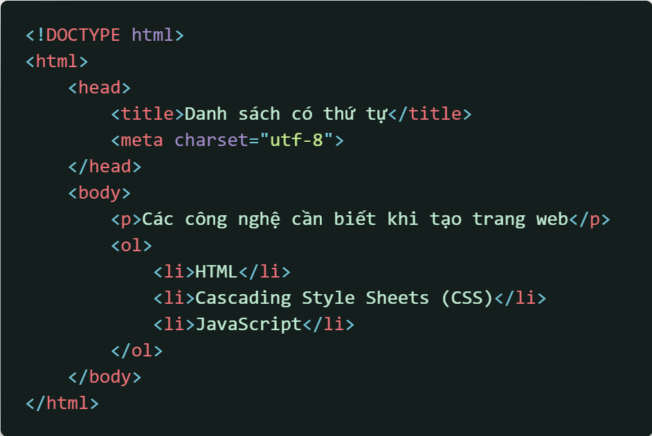
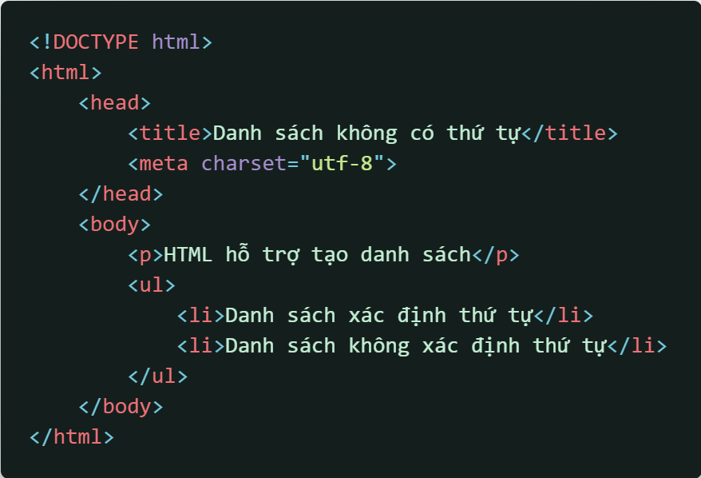
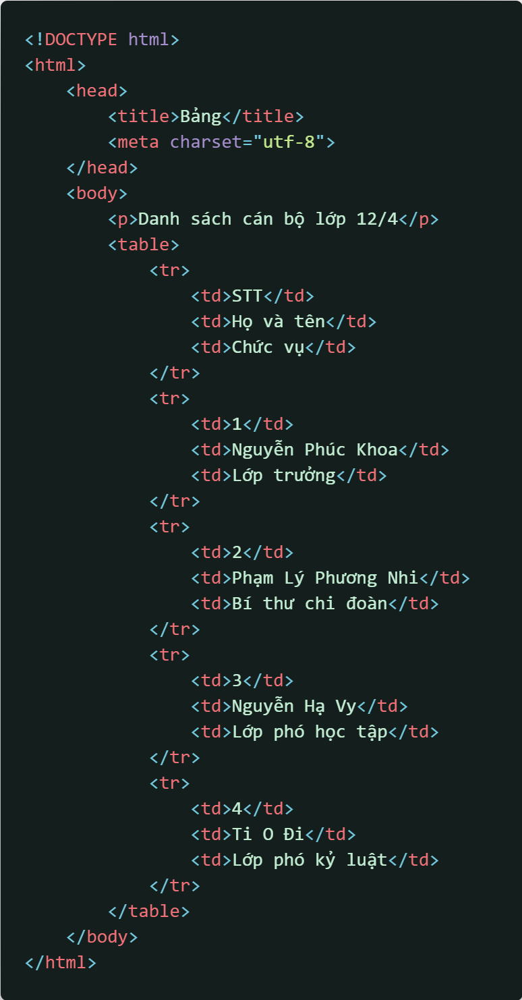

Để tạo 1 danh sách có thứ tự, ta dùng thẻ ol (ordered list) và thẻ li (list item)
Thẻ sẽ được khai báo như sau:
Dưới đây là 1 ví dụ về việc sử dụng danh sách
Chúng ta cũng có thể thay đổi thứ tự bắt đầu 1 danh sách hoặc thay đổi cách xác định thứ tự (như đếm bằng chữ số La Mã, đếm bằng chữ cái, ...)
Để thay đổi thứ tự bắt đầu 1 danh sách, ta thêm thuộc tính start vào trong thẻ ol:
Bảng dưới đây sẽ liệt kê 1 số định dạng danh sách:
| Giá trị | Cách xác định thứ tự |
| 1 | Số nguyên: 1, 2, 3, ... |
| a | Chữ cái thường: a, b, c, ... |
| A | Chữ cái in hoa: A, B, C, ... |
| i | Chữ số La Mã thường: i, ii, iii, ... |
| I | Chữ số La Mã in hoa: I, II, III, ... |
Để tạo 1 danh sách không có thứ tự, ta dùng thẻ ul (unordered list) và li (list item)
Tương tự như danh sách có thứ tự, thẻ sẽ được khai báo như sau:
Dưới đây là 1 ví dụ về việc sử dụng danh sách không có thứ tự
Để tạo bảng, chúng ta cần các thẻ table, tr (table row / hàng của bảng) và td (table data / nội dung của bảng)
Thẻ sẽ được khai báo như sau:
Dưới đây là 1 ví dụ về việc sử dụng bảng
